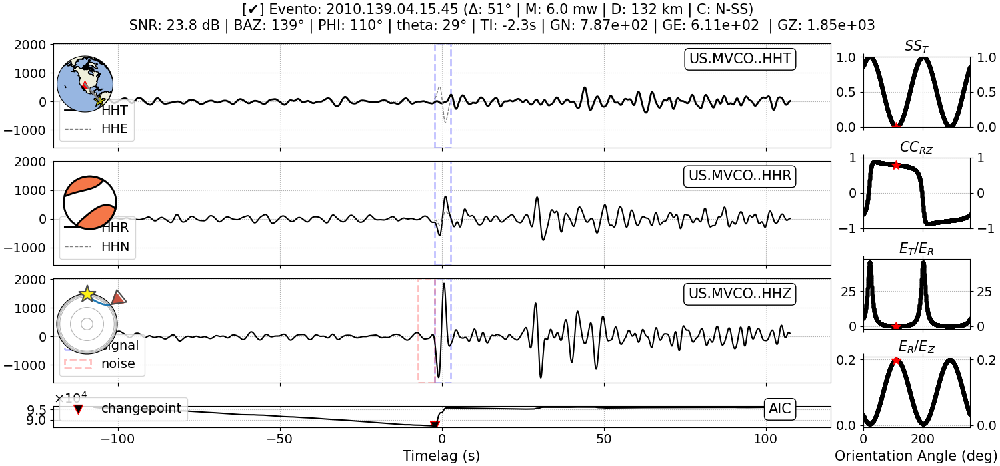
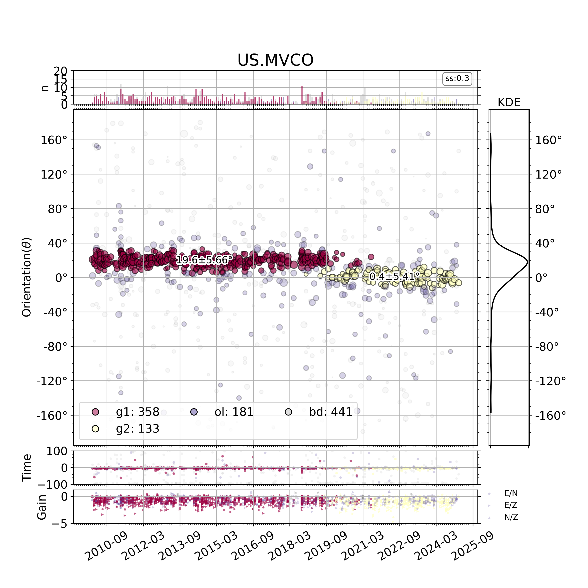

Methodology

Figure 1: Flowchart summarizing the methodology.
Input data step
The methodology relies on three key input datasets, each provided in standard seismological formats to ensure compatibility with widely used seismic analysis tools:
Event Catalog (GCMT-XML)
The event catalog provides information about seismic events, including origin time, location, depth, and moment tensor solutions. This metadata is essential for defining event-station geometry and computing theoretical travel paths (e.g., back azimuths) via models such as TauP.
Waveform Data (MSEED)
The seismic recordings are stored in the MiniSEED format, which contains continuous or segmented time series from multiple seismic stations. These data are used to extract the signal strength, compute energy ratios, and perform waveform correlation required in the back azimuth and sensor orientation analysis.
Station Metadata (StationXML)
The StationXML file includes crucial metadata such as station coordinates, sensor orientations, instrument response, and channel information. This information allows for precise waveform preprocessing, component rotation, and response corrections.
Trimming step
In this step, waveform data are prepared for analysis through a sequence of extraction and cropping operations based on the event location and theoretical arrival times of key seismic phases. The procedure is composed of the following stages:
Retrieving event waveforms (get_waveforms)
Using the event catalog and station metadata, waveforms corresponding to each seismic event are retrieved. This ensures that all subsequent analyses are performed on data that are correctly associated with their respective earthquakes.Computing epicentral distance(gps2dist_azimuth)
The epicentral distance between the seismic event and the recording station is calculated using their geographic coordinates (latitude and longitude). This distance, typically expressed in degrees, is essential for estimating travel times of seismic phases.Computing arrival times(taup)
Based on the calculated epicentral distance and utilizing standard Earth models (e.g., TauP), the expected arrival times of primary seismic phases such as P, PKP, and PKIKP are computed. These phases are crucial for orientation analysis, component rotation, and coherence studies.Trimming waveforms(trim)
For each trace, a time window is extracted around the estimated arrival time of the selected phase. A symmetrical window of ±120 seconds is applied, ensuring that the primary signal is captured while minimizing the inclusion of unrelated noise.
Detection step
This step involves an automated analysis designed to identify reliable seismic events and assess the quality of the recorded waveforms prior to orientation analysis. The detection process begins with the systematic evaluation of each event waveform, focusing on the vertical component (HHZ) where the P-wave arrival is most prominent. The procedure comprises the following sequential operations:
Akaike Information Criterion (AIC)
The AIC method (Maeda, 1985) is applied to detect the precise onset time of the P-wave. This statistical approach identifies the time at which the signal undergoes a significant change, indicating the arrival of the seismic wave.
Signal-to-noise ratio
Following arrival detection, the signal-to-noise ratio (SNRZ) is computed (Braunmiller et al., 2020). This metric quantifies the amplitude of the signal relative to the surrounding noise, providing a measure of data quality. A reliable detection is only considered valid when SNRZ > 10 , ensuring high-quality signals for subsequent analysis.
Time error estimation
If the SNR threshold is met, the method estimates the uncertainty associated with the P-wave arrival time (Tins). This step (Zhu et al., 2020) helps to quantify the precision of the pick and is essential for error propagation in later stages.
Instrumental gain verification
Lastly, the instrumental gain (GE,GN,GZ) is assessed (Park and Ishii, 2019) to ensure consistency and comparability across different stations. Correcting for variations in sensor amplification allows for accurate computation of energy-based criteria in the orientation step.
This detection stage acts as a filter, ensuring that only events with well-defined, high-quality signals proceed to orientation analysis.
Misorientation step
1. Input Data
The first step in the methodology involves preparing the input data required for the optimization process. This includes the back azimuth value (baz) obtained from the TauP model, which represents the theoretical direction from the seismic station to the earthquake source, expressed in degrees from North. In addition to this, four arrays are required:
Transverse Signal Strength (
SST);Similarity between radial and vertical components (
CCRZ);Transverse-to-Radial energy ratio (
ET/ER); andRadial-to-Vertical energy ratio (
ER/EZ).
Each of these arrays is computed for a range of azimuth angles and represents a distinct quality criterion. These parameters are crucial as they reflect how well the seismic energy is distributed in each direction, which in turn helps infer the true back azimuth and sensor misorientation.
2. Define the Azimuth Search Space
To perform the optimization, it is necessary to explore a range of potential azimuth angles. This is done by defining an azimuth search space with a fixed resolution. In this implementation, the azimuth angles range from 0° to 360°, incremented in steps of dphi = 0.1°. The use of a fine step size ensures a high-resolution search, allowing for more precise estimation of the optimal azimuth. This array of candidate angles is generated using the numpy function np.arange(0., 360., dphi). Each angle in this array will be evaluated using the cost function to determine how well it meets the desired quality criteria.
3. Compute the Cost Function
The core of the methodology lies in the formulation and evaluation of a cost function designed to identify the optimal azimuth. The cost function used here is defined as Cost = SST - CCRZ. Each term in this expression contributes to the final score assigned to a given azimuth angle. The term (SST) serves to minimize signal strength, which is interpreted as minimizing the energy outside the principal direction. The (CCRZ) term emphasizes high similarity between vertical and radial components, which is positive, reflecting the expected ground motion for compressional waves.
4. Find the Angle Corresponding minimizing the Cost Function
After evaluating the cost function for each angle in the azimuth search space, the algorithm identifies the angle that yields the lowest cost value. This is done using the numpy function np.argmin(Cost), which returns the index of the minimum value in the array. The corresponding angle at this index is considered the most optimal in terms of meeting the combined quality criteria. The implementation of inter-component energy ratio analysis (a post-processing validation step), the algorithm retains only waveforms meeting strict quality thresholds:
CCRZ > 0.5SNRZ > 10-90 < Tins < 90ET/ER < 0.2ER/EZ < 2
5. Calculate the Optimal Azimuth and Sensor Misorientation
With the index of the best azimuth determined, the corresponding angle (phi) is extracted and rounded to the nearest whole number for clarity. The sensor misorientation angle (theta) is then computed as the difference between the initial back azimuth (baz) and the estimated azimuth angle (phi). To ensure that this angle is interpreted correctly in a circular system, it is normalized to the range (-180°, 180°). This normalization accounts for the periodic nature of angular measurements and ensures consistency in interpretation. The values of phi and theta represent the core outputs of the optimization routine.
6. Extract the Quality Criteria at the Best Index
To further characterize the optimal azimuth identified, the corresponding values of each quality metric are retrieved from their respective arrays using the best_index. These include best(SST), best(CCRZ), best(ET/ER), and best(ER/EZ). These metrics provide a comprehensive summary of the signal characteristics at the optimal orientation and can be used to evaluate the robustness and reliability of the estimated parameters. By examining these values, researchers can also assess the degree of confidence in the optimization results.

Figure 2: Seismic waveform data and associated analysis for a seismic event recorded at station US.MVCO. The data quality is indicated by a signal-to-noise ratio ($SNR_{Z}$) of 23.8 dB for the vertical component. From top to bottom, the panels show the transverse (HHT), radial (HHR), and vertical (HHZ) components of ground velocity, with maps and focal mechanisms indicating the event-station geometry and source. The bottom panel shows the Akaike Information Criterion (AIC) used to identify the signal onset and changepoint. Key waveform metrics are shown above the traces, including back azimuth (baz = 139º), estimated back azimuth (phi = 110º), misorientation (theta = 29º), and amplitude factors (GN,GN,GZ). Right-hand side plots display orientation diagnostics: transverse signal strength (SST), cross-correlation between radial and vertical components (CCRZ), and inter-component energy ratios (ET/ER and ER/EZ). The red star denotes the optimal orientation angle estimated from cost function (Cost).
7. Assessment of overall station quality
The assessment of overall station quality prioritizes misorientation over gain and time instability, leading to the development of a systematic method to identify misorientation trends while excluding outliers, particularly relevant for permanent deployments where orientation may vary over time. Using DBSCAN, a density-based clustering algorithm, the approach detects misorientation periods by analyzing local data density, with clusters requiring a minimum of 20% of total samples (minPts) for statistical significance. The neighborhood radius (episilon) is optimized via silhouette score (ss) analysis, where ss ≥ 0.2 indicates well-defined clusters, allowing independent misorientation computation per cluster; otherwise, misorientation is estimated across the entire period using the interquartile range (IQR) to minimize outlier effects, ensuring robust station quality evaluation under diverse conditions.

Figure 3: Station misorientation analysis for US.MVCO. The middle panel shows the estimated misorientation angle (theta) over time, with symbols and colors distinguishing clusters (g), outliers (ol), and bad data (bd). Mean orientation and standard deviation is shown for stable gain groups, with silhouette scores (ss) indicating clustering quality (top right). Top subplots display the number of measurements (n) per time window, alongside kernel density estimates (KDE) of theta. Bottom subplots present time-dependent instability and relative gain differences (GE/GN,GE/GZ,GN/GZ).
8. Output Results
The final stage of the methodology involves compiling and returning the computed results. These outputs can then be used for further interpretation or incorporated into larger workflows, such as seismic event characterization or sensor calibration routines.